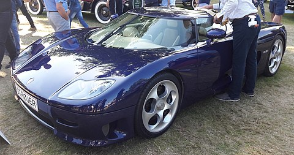

Koenigsegg
Компанія була заснована у 1994 році Крістіаном фон Кьонігсеггом, якому на той час виповнилося лише 22 роки. Молодий швед ставив собі за мету створити ідеальний суперкар. Першим автомобілем спроектованим Крістіаном став прототип Koenigsegg СС, який мав карбоновий дах. Протягом 1996 року його тестували на гоночних трасах та в аеродинамічній трубі компанії Volvo. Вперше для широкого загалу прототип Koenigsegg СС був представлений на Канському кінофестивалі у 1997 році. Завдяки цьому були підписані перші міжнародні контракти. Вже у 2000 році на Паризькому автосалоні була представлена модель готова до серійного виробництва, а у 2002 році воно було налагоджене. Модель, що першою пішла у серійне виробництво мала назву CC8S.
Після пожежі в первісному цеху в 2003 році Koenigsegg переїхали на нинішнє місце штаб-квартири — колишню базу винищувачів площею 4000 м² , яка раніше була домом для BBC Швеції. Поряд з будівлями є 1,7 км злітно-посадкової смуги, яка ідеально підходить для високошвидкісних випробувань автомобілів. Так як злітно-посадкова смуга завширшки 50 метрів, вона також легко може бути перетворена в «гоночну трасу». Багато клієнтів Koenigsegg користуються можливістю посадки своїх приватних літаків на злітно-посадковій смузі недалеко від дверей заводу. Існує також вертолітний майданчик перед головним входом для тих, хто подорожує на вертольоті.
 У 2007 році компанія представила перший у світі «зелений» суперкар, що міг працювати на біопаливі Е85 та видавав 1018 к.с. У 2011 році на Женевському автосалоні представлено новинку Agera R.
У 2007 році компанія представила перший у світі «зелений» суперкар, що міг працювати на біопаливі Е85 та видавав 1018 к.с. У 2011 році на Женевському автосалоні представлено новинку Agera R.